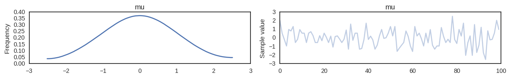
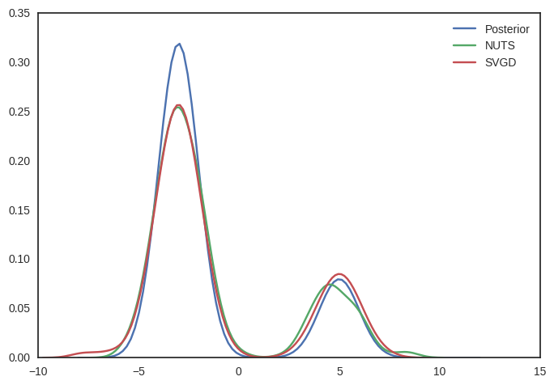

In [1]:
%matplotlib inline
import theano
#theano.config.floatX = 'float64'
import pymc3 as pm
import theano.tensor as tt
import theano
import sklearn
import numpy as np
import matplotlib.pyplot as plt
import seaborn as sns
sns.set_style('white')
In [2]:
with pm.Model():
pm.Normal('mu', mu=0, sd=1)
trace = pm.variational.svgd()
100%|██████████| 5000/5000 [00:09<00:00, 506.42it/s]
In [3]:
pm.traceplot(trace);

In [4]:
with pm.Model():
pm.MvNormal('mu',
mu=np.array([0., 1.]),
cov=np.array([[1., .75],
[.75, 1.]]),
shape=2)
trace = pm.variational.svgd()
100%|██████████| 5000/5000 [00:07<00:00, 656.00it/s]
In [32]:
(len(model.test_point))
Out[32]:
1
In [10]:
trace.chains
Out[10]:
[0, 1, 2, 3]
In [15]:
trace.get_values('mu', squeeze=False)[0].shape
Out[15]:
(20000, 2)
In [7]:
np.cov(trace.flatten())
Out[7]:
array([[ 1.02284988, 0.76190918],
[ 0.76190918, 1.01373306]])
In [6]:
with model:
print(pm.scaling.trace_cov(trace))
[[ 1.02284988 0.76190918]
[ 0.76190918 1.01373306]]
In [2]:
with pm.Model() as model:
pm.MvNormal('mu',
mu=np.array([0., 1.]),
cov=np.array([[1., .75],
[.75, 1.]]),
shape=2)
step = pm.NUTS(scaling=np.eye(2), is_cov=True)
trace = pm.sample(5000, step, njobs=4)
cov = np.cov(trace.flatten())
step2 = pm.NUTS(scaling=cov, is_cov=True)
trace = pm.sample(5000, step2, njobs=4)
100%|██████████| 5000/5000 [00:08<00:00, 585.06it/s]
100%|██████████| 5000/5000 [00:05<00:00, 849.10it/s]
In [27]:
cov
Out[27]:
array([[ 0.93725734, 0.70366519],
[ 0.70366519, 0.95927603]])
In [20]:
step.potential.s
Out[20]:
array([ 0.001, 0.001])
In [25]:
---------------------------------------------------------------------------
IndexError Traceback (most recent call last)
/home/wiecki/working/projects/pymc/pymc3/model.py in get_context(cls)
121 try:
--> 122 return cls.get_contexts()[-1]
123 except IndexError:
IndexError: list index out of range
During handling of the above exception, another exception occurred:
TypeError Traceback (most recent call last)
<ipython-input-25-ba2369cb19a9> in <module>()
----> 1 pm.trace_cov(trace)
/home/wiecki/working/projects/pymc/pymc3/tuning/scaling.py in trace_cov(trace, vars, model)
156 covariance matrix
157 """
--> 158 model = modelcontext(model)
159
160 if model is not None:
/home/wiecki/working/projects/pymc/pymc3/model.py in modelcontext(model)
130 """
131 if model is None:
--> 132 return Model.get_context()
133 return model
134
/home/wiecki/working/projects/pymc/pymc3/model.py in get_context(cls)
122 return cls.get_contexts()[-1]
123 except IndexError:
--> 124 raise TypeError("No context on context stack")
125
126
TypeError: No context on context stack
In [5]:
sns.kdeplot(trace['mu'])
Out[5]:
<matplotlib.axes._subplots.AxesSubplot at 0x7fe2b3d1ebe0>

In [8]:
with pm.Model():
pm.NormalMixture('mixture',
w=np.array([.8, .2]),
mu=np.array([-3., 5.]),
sd=np.array([1., 1.]))
trace_nuts = pm.sample(500)
trace_svgd = pm.variational.svgd(jitter=4., n_particles=800, n=4000)
Auto-assigning NUTS sampler...
Initializing NUTS using advi...
Average ELBO = -0.23624: 100%|██████████| 200000/200000 [00:08<00:00, 23693.57it/s]
Finished [100%]: Average ELBO = -0.22915
100%|██████████| 500/500 [00:00<00:00, 2118.43it/s]
100%|██████████| 4000/4000 [09:50<00:00, 7.50it/s]
In [9]:
mix = pm.NormalMixture.dist(
w=np.array([.8, .2]),
mu=np.array([-3., 5.]),
sd=np.array([1., 1.]))
x = np.linspace(-8, 12, 100)
input = tt.dscalar('input')
input.tag.test_value = 1.
mix_eval = theano.function([input], [tt.exp(mix.logp(input))])
plt.plot(x, [mix_eval(i) for i in x], label='Posterior')
sns.distplot(trace_nuts['mixture'], label='NUTS', hist=False)
sns.distplot(trace_svgd['mixture'], label='SVGD', hist=False)
plt.legend()
/home/wiecki/miniconda3/lib/python3.5/site-packages/statsmodels/nonparametric/kdetools.py:20: VisibleDeprecationWarning: using a non-integer number instead of an integer will result in an error in the future
y = X[:m/2+1] + np.r_[0,X[m/2+1:],0]*1j
Out[9]:
<matplotlib.legend.Legend at 0x7fe2bc12cac8>
